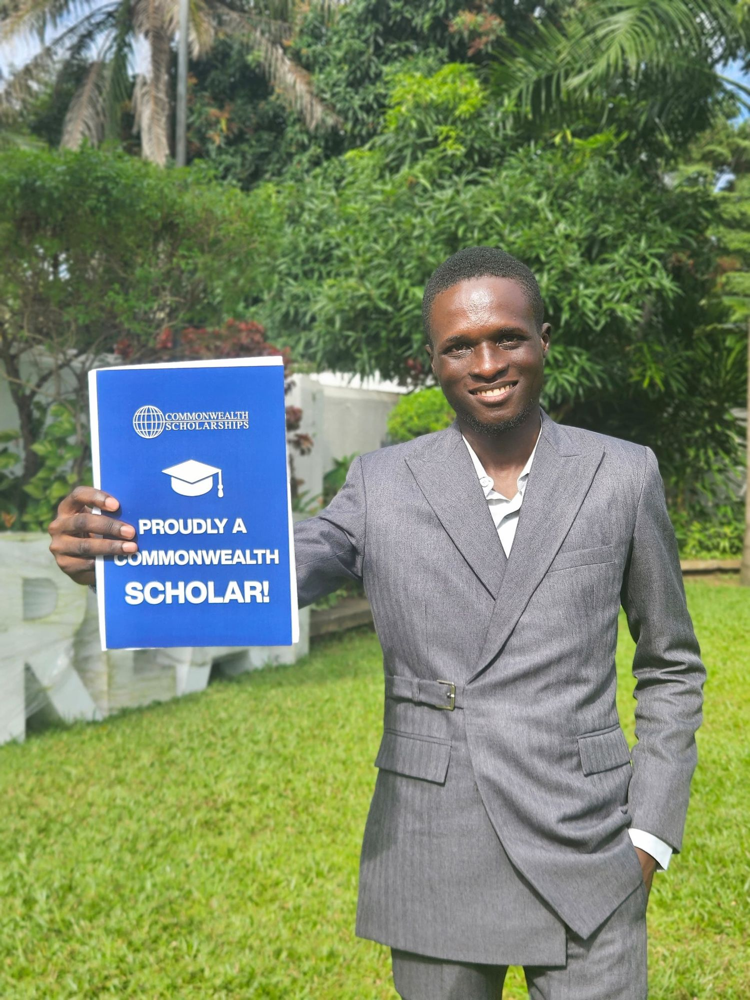
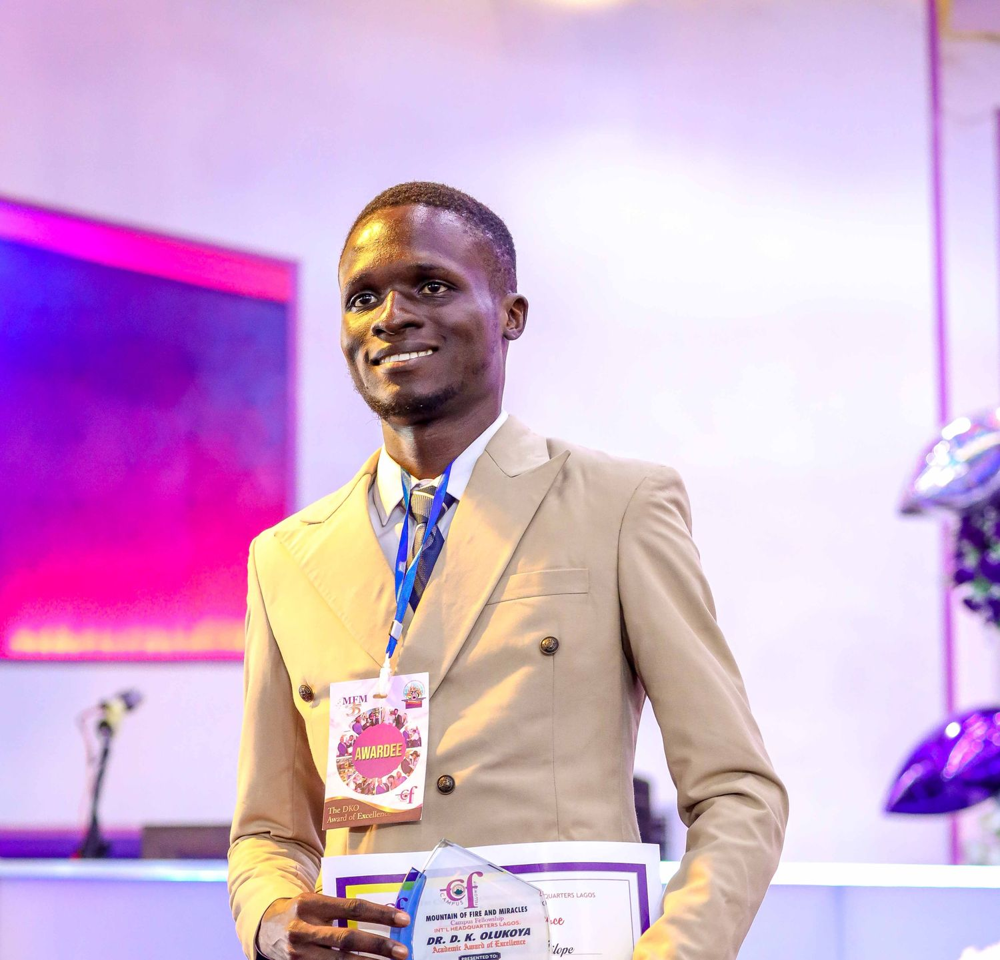

Recognition
Awards and honours
More than 25 international awards, fellowships and honours across veterinary medicine, global health and research leadership.
-
2026
Conference Travel Awards
TTU Graduate School Travel Award · TTU-SVM Spring Graduate Student Travel Award
-
2026
ASM Future Leaders Fellow
Selected by the American Society for Microbiology for its 2026–2028 national mentorship fellowship.
-
2026
Labroots Travel Scholarship
Spring 2026 Winner.
-
2026
ICPSR Opportunity Scholarship
University of Michigan Summer Program in Quantitative Methods.
-
2026
TCFA Education Foundation Scholarship
Texas Cattle Feeders Association.
-
2024/2025
MSc IICD Prize Winner, University of Leicester
Top of the MSc Immunity, Infection and Chronic Disease cohort. Graduated with Distinction as a Commonwealth Scholar.
-
2024
Commonwealth Shared Scholarship
Selected as a 2024 Commonwealth Scholar by the UK Foreign, Commonwealth and Development Office.
-
2024
Dr D. K. Olukoya Academic Award of Excellence
-
2023
FAO World Food Forum Transformative Research Challenge Winner
A global research innovation prize from the UN Food and Agriculture Organization.
-
2020
Doctor of Veterinary Medicine, Distinction
University of Ibadan, Nigeria.

